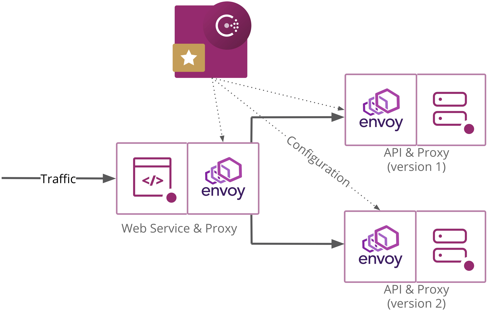
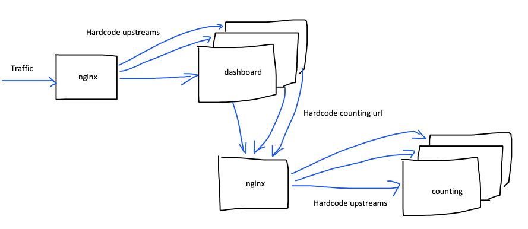
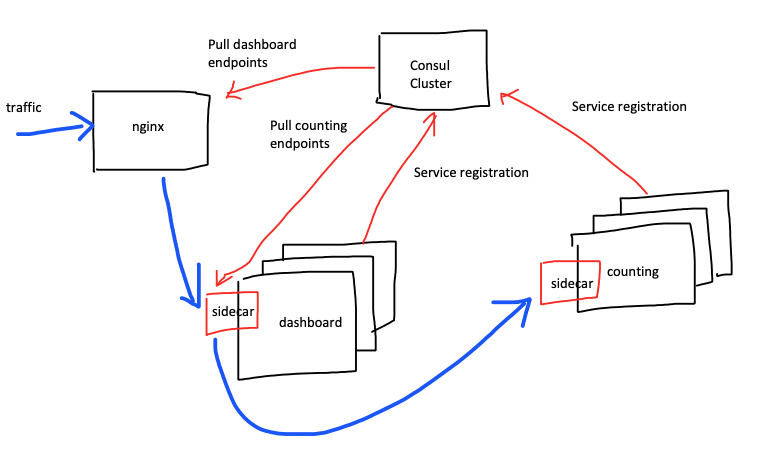
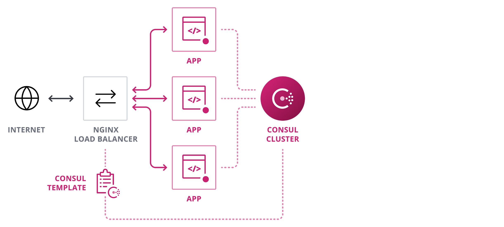
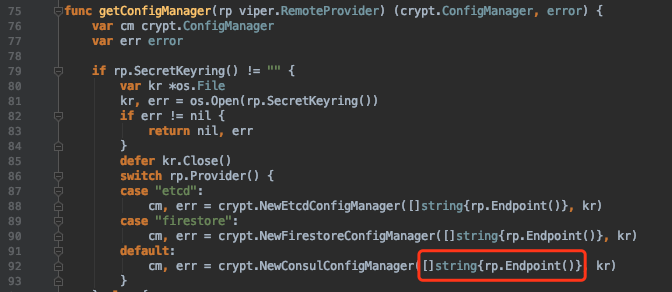
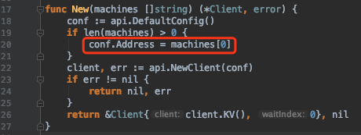

简单介绍
hashicorp 对 Consul 的定位是服务间网络方案。
Consul is a service networking solution to connect and secure services across any runtime platform and public or private cloud. https://www.consul.io/
官方的两个 use case 就是 service discovery, service mesh。
service discovery
与 etcd 比起来，Consul 的服务发现是开箱即用的。优点如下：
- First class 的服务注册和获取接口。不需要像 etcd 那样在 kv 存储基础上做包装。
- 服务注册，可以是consul 命令，也可以是HTTP API。
- 获取服务注册表，除了 HTTP 接口，还可以使用 DNS 查询接口。
- 健康检查。服务注册的时候可以提供健康检查项。健康检查机制保证了拿到的服务注册表是“健康”的。健康检查也包括节点的检查。单纯利用 consul 健康检查这个功能，consul 就是一个分布式监控工具。
- Web 管理界面。节点、服务、健康与否一目了然。
- Watch 功能。通过 blocking queries/ long-polling HTTP API 的方式得到服务注册表的改变的通知。
- 跨数据中心（取资源）。When a request is made for a resource in another datacenter, the local Consul servers forward an RPC request to the remote Consul servers for that resource and return the results. https://learn.hashicorp.com/consul/security-networking/datacenters#data-replication
service mesh
service discovery 只是微服务治理的初级阶段。作为服务请求方，通过 consul/ etcd 获取到服务注册表，下一步就是选择其中一个服务实例，发送请求。这个步骤叫做负载均衡。可以想象，客户端的代码会越来越重了。
service mesh可以理解为 service discovery的升级版。为每个服务实例引入 sidecar proxy，接管服务实例的入、出流量。将 service discovery，load balancer 从 service 本身抽离出来，下沉到基础设施，也就是 sidecar proxy。
sidecar proxy 上的功能还有更多扩展，比如：
- 蓝绿部署，A/B 测试。打个比方，一个服务存在两个版本v1, v2，给v1分配80%的流量，给v2分配20%的流量。
- 流量加密。authentication and authorization。
- 服务指标的收集。比如HTTP协议的返回状态码。
- 调用链追踪。
- Intention。可以设置服务与服务之间是否允许连接。Intentions define service based access control for services in the Consul service mesh and are used to control which services are allowed or not allowed to establish connections.
- 这一切服务本身是无感知的。这也简化了应用的开发。
这就是 Consul Connect 的功能。与之对应的竞品是 Istio。
当然，一切都有代价。给每个服务实例创建一个sidecar proxy，这在部署上需要做好准备。使用 Kubernetes 可以提高效率，会帮助自动创建 sidecar proxy。
key value store
consul 也能当 kv store 使用，这是服务发现的底子。使用方式跟 etcd 差不多。
etcd 官方与 consul 做了比较。consul 在存储扩展性上不够好。也缺少KEY多版本存储，不方便追溯历史。key value store 这个场景，etcd 是更合适的。
As it stands in Consul 1.0, the storage system does not scale as well as other systems like etcd or Zookeeper in key-value operations; systems requiring millions of keys will suffer from high latencies and memory pressure. The key value API is missing, most notably, multi-version keys, conditional transactions, and reliable streaming watches.
etcd and Consul solve different problems. If looking for a distributed consistent key value store, etcd is a better choice over Consul. If looking for end-to-end cluster service discovery, etcd will not have enough features; choose Kubernetes, Consul, or SmartStack.
https://github.com/etcd-io/etcd/blob/master/Documentation/learning/why.md#consul
consul client agent的主要工作是健康检查，所以如果只是key value store的使用场景，可以直接与 consul server agent 交互，就像使用 etcd 那样。
distributed system coordinate
分布式锁，分布式系统的协调 https://www.consul.io/docs/internals/sessions.html 。使用场景比如Hadoop系统的选主。不过大部分开源分布式系统基本上使用zookeeper和etcd。
核心概念

Consul 架构图
| 名称 | 说明 |
|---|---|
| node | 每个 node 安装并运行 consul agent。 |
| consul server agent | 1）维护核心状态并基于共识算法 consensus protocol raft 参与leader选举。2）server节点一般建议3个或是5个。写压力大的集群，考虑升级服务器实例的配置和低延迟的存储。 |
| consul client agent | 1）当前节点、当前节点上的服务的健康检查。2）RPC请求转发到 consul server agent。3）每个主机都有一个agent的好处是，只要与本地agent通信。 |
| Datacenter | 可以理解为一个 consul 集群。一个consul 集群至少有一个 consul server agent。 |
| LAN gossip pool | 单个 Datacenter 内，由 consul server agent 和 consul client agent 组成。pool内成员通过 gossip protocol 通信。 |
| WAN gossip pool | 跨 Datacenter，由所有 Datacenter 内的 consul server agent 组成。可以跨网络通信。pool内成员通过 gossip protocol 通信。 |
| service | 一个service对应多个service实例，注册时使用相同的service_name，并使用不同的service_id区分实例。 |
参考
Consul Connect 体验
1. Quickstart: Consul Connect

- Secure Service-to-Service Communication https://learn.hashicorp.com/consul/developer-mesh/connect-services
- code https://github.com/hashicorp/demo-consul-101
简单说明：
consul agent -dev -config-dir="./demo-config-localhost" -node=laptop这里已经完成了service和proxy的注册。这个可以后续脚本化，按需服务注册。- service本身都不做服务发现和负载均衡。这些事情交给了 sidecar proxy。以dashboard service为例，
countingServiceURL = getEnvOrDefault("COUNTING_SERVICE_URL", "http://localhost:9001")，默认读的是本地的9001端口，也就是sidecar proxy的绑定端口。这就是劫持流量。 consul connect proxy -sidecar-for counting-1需要手动为service创建proxy。这个可以后续脚本化。- 能看出Consul Connect /Service Mesh的好处了：不再侵入业务代码。重复的事情已下沉到基础设施，sidecar proxy处理。
2. use Envoy
Use Envoy with Connect https://learn.hashicorp.com/consul/developer-mesh/connect-envoy
3. Canary deployments using traffic splitting and resolution

Traffic Splitting for Service Deployments https://learn.hashicorp.com/consul/developer-mesh/consul-splitting
code https://github.com/hashicorp/consul-demo-traffic-splitting
4. Zipkin tracing
code https://github.com/hashicorp/consul-demo-tracing/tree/master/jaeger
基于 Consul 微服务改造
暂不用 Kubernetes 和 Docker。
目前基本上是这种架构：

预期架构：

预期好处：
- 减少硬编码。
- 可动态新增服务实例。
- 基于sidecar做更多服务治理工作。
服务间通信
目的：应用对 consul 无感知，降低应用开发的复杂度。
需要做如下准备：
- 独立服务器安装 consul server agent 集群。负责维护集群状态。
- 每台应用服务器都有 consul client agent 运行，并已经连入 consul server agent。负责健康检查，与请求转发。
- 每台应用服务器上安装有 envoy 二进制文件。负责sidecar proxy的创建。
- 服务注册、注销的工作交给应用的伙伴脚本。
伙伴脚本的工作：
- 启动应用。
- 服务注册和健康检查。所需的信息，比如IP可以通过命令取、端口可以从应用启动信息取、服务名是固定的。
- 启动 sidecar proxy 进程。
- 伙伴脚本还需要监测应用的状态，应用不存在后，发起服务注销。
- consul的健康检查机制会自动把不健康的服务过滤掉，对伙伴脚本的要求没那么高了。
对外服务
目的：动态更新 nginx upstream。
目前，我们使用nginx作为对外服务。使用 consul-template，动态生成 nginx 配置（upstreams）并 reload nginx。

参考
- Load Balancing with NGINX and Consul Template https://learn.hashicorp.com/consul/integrations/nginx-consul-template
- consul-template https://learn.hashicorp.com/consul/developer-configuration/consul-template
- Manage local application configuration files using templates and data from etcd or consul 与consul-template的思路是一样的 https://github.com/kelseyhightower/conf
基于 Consul 的配置中心
目前，应用读本地配置文件。
目标，从 consul 读配置文件，并监听配置变化。
基于 Viper 库和 consul 做了一个demo。 https://github.com/XUJiahua/consul_config_demo
viper
https://github.com/spf13/viper
其中 Viper 的 remote config 支持的不够好：
- OnConfigChange 对 remote config 无效。
- WatchRemoteConfig()与ReadRemoteConfig() 完全没区别。
- WatchRemoteConfigOnChannel() 是真正有watch功能的方法，但是没有通知应用代码。默默就更新配置了。
所以基于 PR https://github.com/spf13/viper/pull/456/files 更新了下viper。
还有个不足。viper remote config 只接收一个 consul/etcd 的地址。

viper 依赖的 crypt 库因为consul api 库只支持一个地址，也支持不了多地址。

有几个解决办法：
- 搭配 consul 服务发现使用，只连本地的 consul client agent，client 节点挂了，本机和其上的服务等会标记为失败了，不会影响其他服务。
- 保证 consul 地址是高可用的，比如 nginx 代理多个consul 地址。
- 更新库，让 consul api 库支持多个地址。参考下 etcd client 的写法。 https://github.com/etcd-io/etcd/blob/master/client/client.go#L362
其他：一些资料
可能有帮助。
- Getting Started https://learn.hashicorp.com/consul?track=getting-started#getting-started
- 基于consul构建golang系统分布式服务发现机制（使用Consul HTTP API） https://segmentfault.com/a/1190000008471221
- Service registry bridge for Docker 监听Docker的Unix套接字来获取Docker容器启动和消亡时的事件，并且它会通过在事先配置好的一个可插拔的后端服务中创建新记录的形式自动完成容器的服务注册 https://gliderlabs.github.io/registrator/latest/
Last modified on 2020-04-21